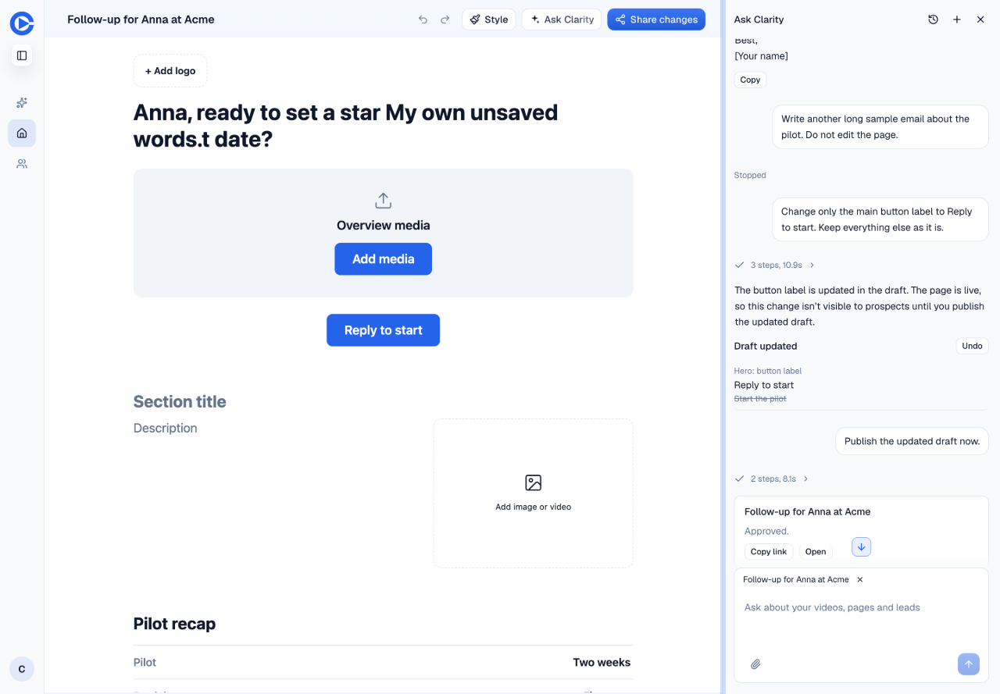
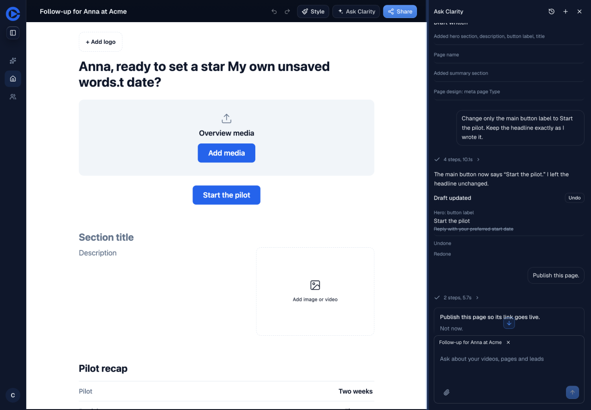
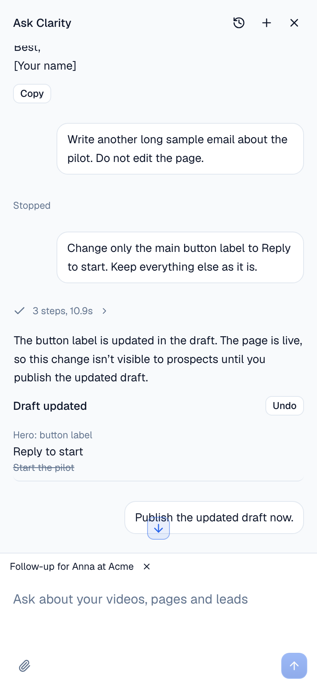
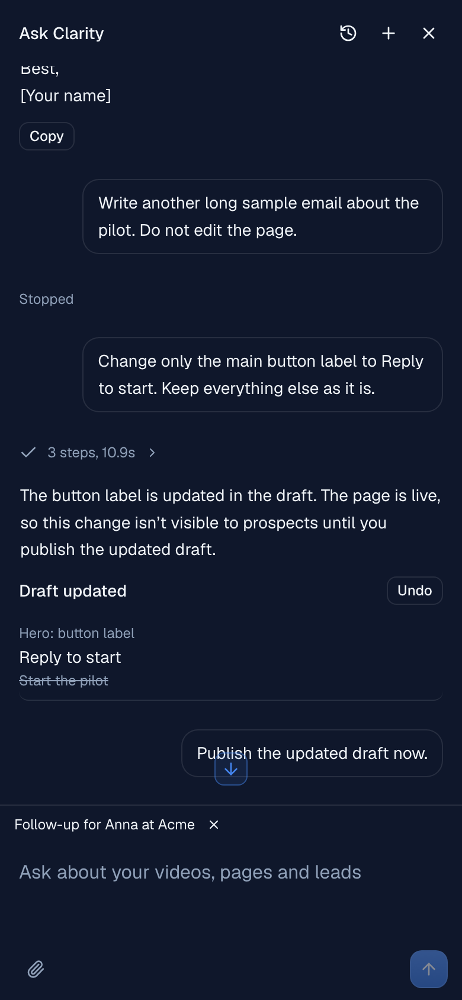
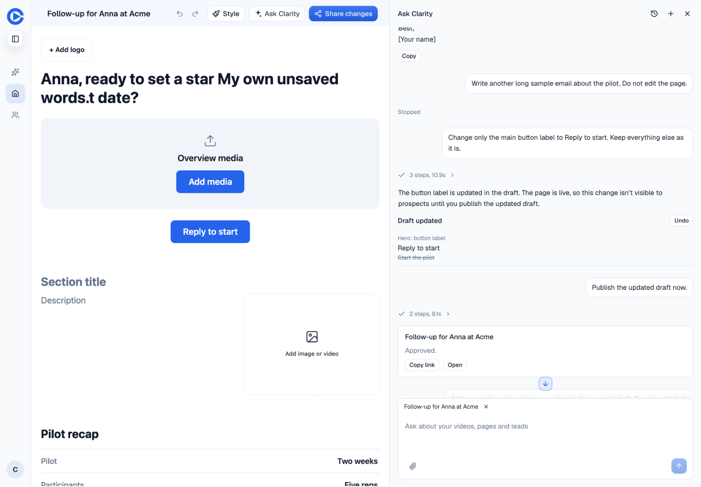

Head 706ea45ec1f6c8e3ec4686cd1881daed8cadfc96. All screenshots and the ten-second recording below were captured on this head. Seeded sample data only. I inspected every screenshot and sampled the recording as a contact sheet.
Open the preview and sign in with the seeded userPro account. Use its existing test credentials. Draft PR 1623.
The focused suite passes 79 tests in 13 files. Editor typecheck and the test-type budget pass. Scoped ESLint has no errors. CSS budget passes. The final CI build, preview and guards pass.
I did not check Safari, Firefox, a physical phone, a real phone keyboard, VoiceOver, forced colors, a real account swap, an interrupted upload, or a live unknown/stale approval. Upload failures, account clearing, reconnect delays and draft merging have focused test coverage. I did not run a separate /new starter or recorder-arrival walkthrough, a real failed-send retry, or a touch-file upload walkthrough.
The generated sample page contains an empty story placeholder. Its change card also exposes the awkward server label "Page design: meta page Type". Those are follow-ups outside D7. The odd phrase in the headline is my deliberately inserted test text, placed inside a word by the editing gesture. It demonstrates that the rep's words survived; it is not model copy.
Earlier CI attempts found two new provider ref writes and a missing router wrapper in an existing test. Both are fixed. An earlier React Doctor run also flagged an unchanged Library test; the final CI run passes. No suppression or budget was expanded. No production or staging deployment or configuration changed. No independent agent review ran, as this brief prohibited subagents.
Change-row reveal, opening the panel again, history, restoring a parked draft, Esc and Cmd+J.




